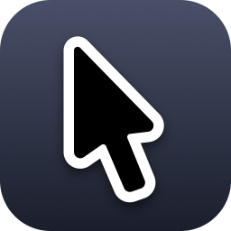

NOxygen59
Tweaks personnels, iPad Pro M1, iOS 16, rootless
Ou ajouter cette source à la main dans Sileo :
https://noxygen59.github.io/sileo-repo/
- Arrow, Finally. RevampedLa flèche de macOS 26/27, à la taille du Mac. Code
- Dual Wield PadPerspective corrigée quand on rabat l'écran sur un Magic Keyboard. Code
Écrits par Claude (Anthropic) à la demande de NOxygen59, pour son iPad. Sans garantie.